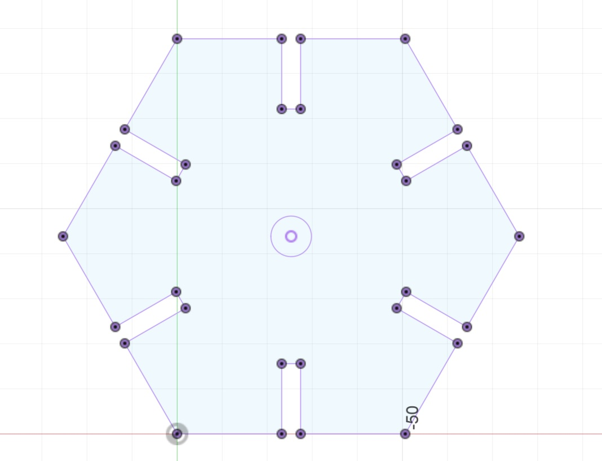

<h1 style= "text-align: center;">
Week 2: 2D Design & Cutting </b></h1>
This weeks assignment consisted of (1) creating a press-fit construction kit (2) working through a Fusion 360 tutorial and (3) selecting 2 household objects, measuring them using calipers and modeling them in Fusion 360.
<h2 style= "text-align: center;">
Part 1: Press-Fit Construction Kit (and stickers) </b></h2>
In this part of the assignment, I made a press-fit construction kit that could be assembled in multiple ways. In addition to measuring the thickness of my cardboard that I was going to laser cut, I also had to account for kerf. I had the idea of creating a sort of holder for my apple pencil so I measured the diameter of my apple pencil to create a circle in the middle of my design.
My measurements ended up being (1) thickness: 4.4 mm and (2) *experimental* kerf: 0.2 mm.
Here is an image of my design that was prototyped using Fusion 360:
<div class="image-text-container">

<p> My prototype is snowflake inspired!</p>
</div>
<h3 style= "text-align: center;">
Laser Cutting! </b></h3>